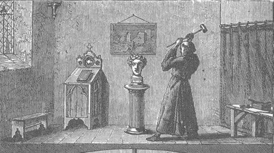

My History of Robotics
This post comes after a long period of silence on this blog that I'm
sure no one reads. I'm making this post to catalog some of the links
that I've collected that detail the history of robotics and forward a
view of history that I favor even if it involves mythical or ficticious
elements because I like them. This blog after all is to highlight things
that I like.
One of the saints that I considered making my confirmation saint was
Albert Magnus because he represents the combination of scientific
excellence, great piety, and a man of culture. It draws me to praise and
exclaim how our God can raise such amazing people to serve Him. It is
also a reminder that through God we can do amazing things. Remember it
is a gift of God that Albert received and exercised for the glory of God
(AMDG!).
I also really like this picture of St. Thomas Aquinas going to destroy
the talking robot that St. Albert Magnus constructed to automatically
provide answers to questions posed such as theological questions. It
goes to show how in the amazing drama of salvation and life in Christ,
two men can go about drawing men to Christ in their own unique way and
find deep friendship and comradery in it. The master and pupil are
brought together to make something beautiful for God (great book btw).

This
website
has an interesting history about how robotics goes further back than the Jetsons.
Another website worth consider is
Beachcombings Bizarre History Blog
which shows how brazen heads and medieval robots are connected. The coverage about this is quite niche and tantalizes my Catholic pride.
The last
website shows a more
holistic coverage of computing over time with reference to Bl. Raymond Lull who doesn't get enough attention.
Finally, a more academic read can be found
here.